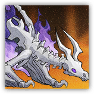

The Conflagration
Melee, Ranged, Physical, Art; Undead Leader (Draco, Dragon, Chromatic)

|
 |
The Red Dragon Ancestor Who Never Departed. Looming over the wilds, or simply the returning-flame ground at the heart's desire. New fire cast upon old fire — all ends, and all is born anew. The Old Dance. The red dragon ancestor statue, forged from the returned dead fire by the heroes, a gift to Terra. It arrives draped in dying, fierce sunlight, yet nearly blots out the sky. |
"The moment the still-burning red dragon skeleton had halted before her — face to face with the giant. Those were Eblana's eyes. Come — farewell the deaths of old, and dance with the dying ember!"
Necro Dragon — The Usurper
Huge Undead (Dragon; Draco, Chromatic), Lawful Evil
| AC 22 | Initiative +16 (26) |
| HP 507 (26d20+234) | |
| Speed 40 ft., climb 40 ft., fly 80 ft. (Mythic Trait active only) | |
| Mod | Save | Mod | Save | Mod | Save | |||||||||
|---|---|---|---|---|---|---|---|---|---|---|---|---|---|---|
| STR | 30 | +10 | +4 | DEX | 10 | +0 | +0 | CON | 29 | +9 | +9 | |||
| INT | 16 | +3 | +3 | WIS | 15 | +2 | +10 | CHA | 27 | +8 | +8 |
| Skills Perception +10 |
| Immunities Fire, Necrotic, Poison; Blinded, Deafened, Poisoned, Charmed |
| Senses Darkvision 120 ft., Blindsight 60 ft.; passive Perception 20 |
| Languages Telepathy 120 ft. (Dragons only) |
| CR 26 (90,000 XP, or Mythic 180,000; PB +8) |
Traits
Necromantic Fireseed. When the Necro Dragon causes a creature to start Burning, this burning deals 7 (1d12) necrotic damage per instance instead of normal fire damage, and the creature is also affected by Burn Mark. In addition, when the Necro Dragon reduces a creature's HP to 0, that creature gains one level of Exhaustion, and the Necro Dragon regains 26 (4d12) HP.
Hellfire Resistance. Any creature Burning deals damage rolls against the Necro Dragon with a -8 penalty.
Boss Resistance (3/Day). When the Necro Dragon fails a saving throw, it can expend 50 HP to instead succeed. Additionally, the Necro Dragon can take Legendary Action and expend a use of Boss Resistance to regain 50 HP.
The Last Dance (Mythic Trait; Recharges on Long Rest). While the Necro Dragon's HP is reduced to 0, it doesn't die. At the start of its next turn, its HP resets to 507 and it regains all expended uses of Boss Resistance. Additionally, for one hour, the Necro Dragon can use the options in the "Mystic Actions" section and gains a flying speed of 80 ft.
Actions
Multiattack. The Necro Dragon makes three Rend attacks. It can replace one or more of these attacks with a Cast a Spell action using Death Bell.
Rend. Melee Attack Roll: +18, reach 15 ft. Hit: 19 (2d8+10) slashing damage plus 11 (2d10) necrotic damage.
Granting New Fire (Recharge 5-6). Dexterity Saving Throw: DC 24, each creature in a 90-foot Cone. Failure: 91 (14d12) fire damage, and the target starts Burning. Success: Half damage only.
Artcasting. The Necro Dragon casts one of the following spells as a 17th-level caster, using Charisma as its spellcasting ability (Spell Save DC 24, Spell Attack +16).
At will: Toll the Dead, Minor Illusion, Blight
1/day each: Death Ward
Bonus Actions
Extinctive Burnlight. Constitution Saving Throw: DC 24, one Burning creature within 60 ft. of the Necro Dragon. Failure: 47 (6d6+26) fire damage that can't be reduced, and the target is Stunned and Blinded until the end of the Necro Dragon's next turn. Failure or Success: The Burning condition and Smoldering Mark are removed from the target.
Spin Wandering (1/Short Rest; While Bloodied only). The Necro Dragon gains 100 HP of Temporary HP. While this Temporary HP persists, the Necro Dragon's movement doesn't provoke Opportunity Attack, and it has Advantage on Dexterity saving throws. At the start of the Necro Dragon's next turn, if these Temporary HP remain, it regains another 100 HP.
Legendary Actions
Legendary Actions: 3 (4 in lair). The Necro Dragon can take one of the following actions immediately after another creature's turn. It regains all Legendary Actions at the start of its turn.
Pinching Off. The Necro Dragon chooses any number of Burning creatures it can see within 120 ft., dealing 13 (2d12) necrotic damage to each.
Fire Restoration. The Necro Dragon chooses one visible creature within 15 ft., dealing 7 (1d12) necrotic damage to it and causing it to start Burning.
Longing Heart. If there are no other creatures within 30 ft. of it, Necro Dragon uses Artcasting to cast Toll the Dead.
Mystic Actions
If the Necro Dragon's The Last Dance trait is activated, it can choose from the following options as Legendary Actions.
The Bells Rang. The Necro Dragon uses Artcasting to cast Toll the Dead.
Necromancy Wildfire (1/Day). The Necro Dragon immediately finishes recharging Granting New Fire and can fly up to 40 ft. without provoking Opportunity Attack. Additionally, the next Granting New Fire is enhanced: the area of effect becomes a 20-foot-wide, 120-foot-long Line originating from a point on the ground beneath the Necro Dragon. The ground in the area is also set ablaze for 1 minute. Any creature the Necro Dragon chooses that enters the area for the first time on a turn, or starts its turn there, takes 7 (1d12) necrotic damage.